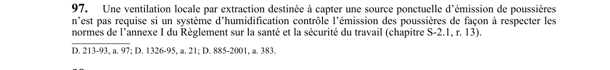

art-97-RSSM : ventilation locale ou humidification
Un article du wiki ⚖️ Recueil législatif
En bref
Une ventilation locale par extraction destinée à capter une source ponctuelle d'émission de poussières n'est pas requise si un système d'humidification contrôle l'émission des poussières. Cette obligation vise l'employeur.
- L'annexe I du Règlement sur la santé et la sécurité du travail.
- Système d'humidification contrôlant les poussières conformément à l'annexe I du RSST.
🌐 LegisQuébec · 📄 PDF officiel
Texte officiel : capture du PDF
{kind=link}

Toucher l'image pour l'agrandir🔗 Voir art. 97 RSSM dans le PDF (page 37)
Version : texte officiel du RSSM (RLRQ c. S-2.1, r. 14), à jour au 1er mai 2024 — Éditeur officiel du Québec
Voir aussi
- art. 95 : remise marche ventilateur avant accès · interdiction : nul ne peut accéder à un lieu de travail situé dans le circuit d'un ventilateur arrêté avant que celui-ci n'ait été remis en marche et n'ait effectué au moins un changement d'air à ce lieu de travail.
- art. 96 : réintégration poste après sautage · faculté : après un sautage, aucun travailleur ne peut réintégrer son poste de travail souterrain avant que celui-ci et la voie d'accès n'aient été ventilés conformément à l'article 41 du RSST et qu'au moins un changement d'air n'ait été effectué au poste de travail.
- art. 98 : contrôle poussières mouvement roche équipements · obligation : lorsque des poussières sont produites par le mouvement de la roche, de matériaux ou d'équipements mobiles, un moyen de contrôle tel que le calcium, l'eau ou la mousse doit être utilisé pour rabattre ou empêcher l'émission de ces poussières.
- art. 99 : plans ingénieur installation ventilation souterraine · obligation : dans une mine souterraine, toute nouvelle installation de ventilation ou toute modification à une installation existante requiert des plans et devis d'un ingénieur incluant les sens et volumes de déplacements d'air, l'emplacement des ventilateurs, des portes d'incendie.
- ⚖️ Loi habilitante : LSST
- ↑ Index du bloc : Aménagement du chantier
Pages qui pointent ici (5)
- art-95-RSSM : remise marche ventilateur avant accès Recueil législatif
- art-96-RSSM : réintégration poste après sautage Recueil législatif
- art-98-RSSM : contrôle poussières mouvement roche équipements Recueil législatif
- art-99-RSSM : plans ingénieur installation ventilation souterraine Recueil législatif
- RSSM : Aménagement du chantier (art. 12 à 99) Recueil législatif